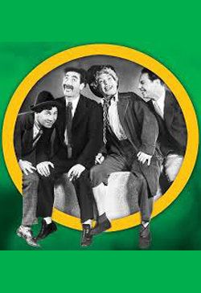
Humor Risk (1921)
Previewed once and never released; film is lost
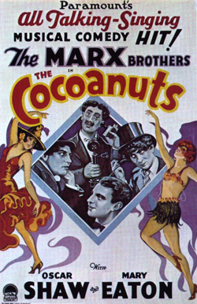
The Cocoanuts (1929)
Released by Paramount Pictures (based on a 1925 Marx Brothers Broadway musical)
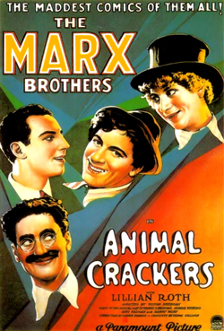
Animal Crackers (1930)
Released by Paramount (based on a 1928 Marx Brothers Broadway musical)
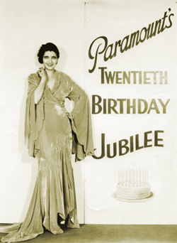
The House That Shadows Built (1931)
Released by Paramount to mark its 20th year with this feature presentation of film clips and coming attractions.(sequence featuring the Marx Brothers)
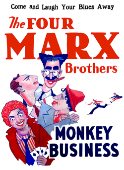
Monkey Business (1931)
Released by Paramount
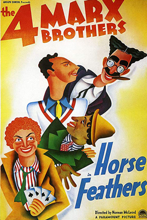
Horse Feathers (1932)
Released by Paramount
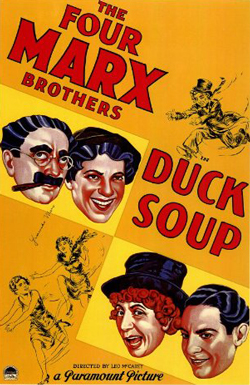
Duck Soup (1933)
Released by Paramount
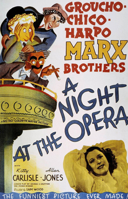
A Night at the Opera (1935)
Released by Metro-Goldwyn-Mayer
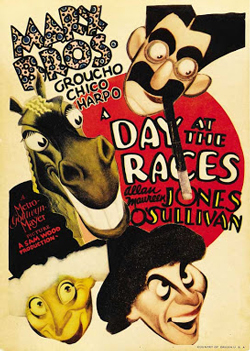
A Day at the Races (1937)
Released by Metro-Goldwyn-Mayer
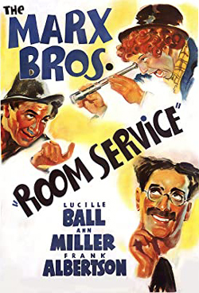
Room Service (1938)
Released by RKO Radio Pictures (based on a 1937 Broadway play that did not star the Marx Brothers)
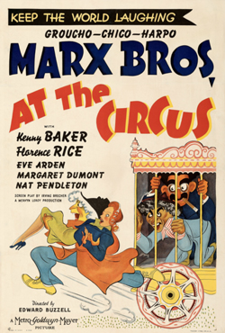
At the Circus (1939)
Released by Metro-Goldwyn-Mayer
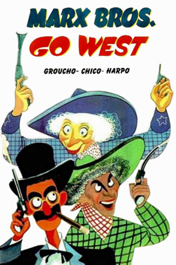
Go West (1940)
Released by Metro-Goldwyn-Mayer
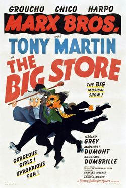
The Big Store (1941)
Released by Metro-Goldwyn-Mayer (intended to be their last film)
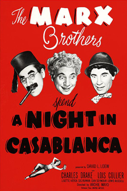
A Night in Casablanca (1946)
Released by United Artists
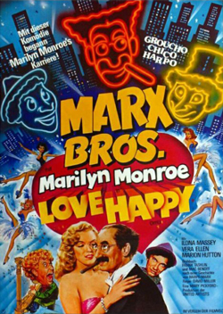
Love Happy (1949)
Released by United Artists
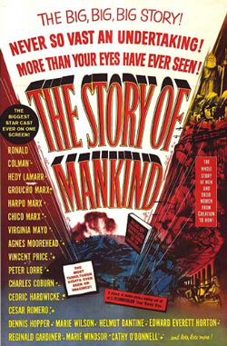
The Story of Mankind (1957)
Released by Warner Bros. (not a Marx Brothers film, but the three brothers perform separate cameos)
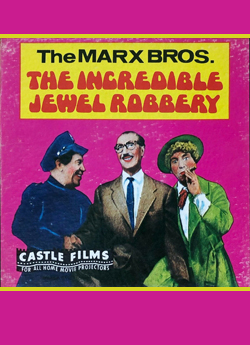
The Incredible Jewel Robbery (1959)
An episode of the TV series General Electric Theater starring Harpo and Chico with an uncredited Groucho in a cameo role